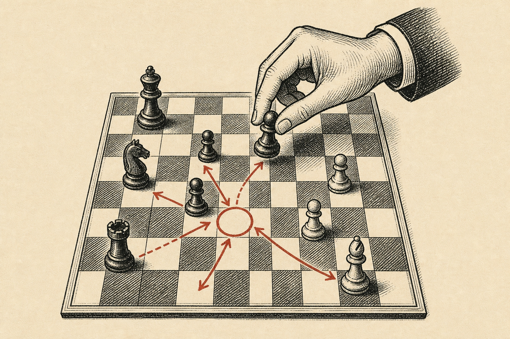

<!doctype html>
<html lang="zh-CN">
<head>
<meta charset="utf-8" />
<meta name="viewport" content="width=device-width, initial-scale=1" />
<title>Today — 研迹 ResearchTrace</title>
<link rel="preconnect" href="https://fonts.googleapis.com">
<link rel="preconnect" href="https://fonts.gstatic.com" crossorigin>
<link href="https://fonts.googleapis.com/css2?family=Source+Serif+4:ital,wght@0,400;0,600;0,700;1,400;1,600&family=Inter:wght@400;500;600&family=JetBrains+Mono:wght@400;500;600&family=Noto+Serif+SC:wght@400;600;700&display=swap" rel="stylesheet">
<link rel="icon" type="image/svg+xml" href="favicon.svg" />
<link rel="stylesheet" href="css/tokens.css" />
</head>
<body data-page="today">
<div id="app"></div>
<script src="js/shell.js"></script>
<script>
RT.mountShell({ activeId: "today", crumb: "RESEARCHTRACE / TODAY · 2026年5月9日 周六" });

document.getElementById("main").innerHTML = `
<!-- ============ MASTHEAD ============ -->
<section style="border-bottom:1px solid var(--divider);background:var(--bg-paper);">
  <div style="max-width:1200px;margin:0 auto;padding:36px 48px 28px;position:relative;">
    <div style="display:flex;align-items:flex-start;justify-content:space-between;gap:32px;">
      <div>
        <div class="kicker-red" style="margin-bottom:14px;">VOL. III · ISSUE 127 · YOUR DAILY DIGEST</div>
        <h1 class="headline" style="font-size:54px;margin:0 0 8px;">Today&rsquo;s Digest</h1>
        <p style="font-family:var(--font-serif);font-style:italic;font-size:17px;color:var(--ink-secondary);margin:0;max-width:640px;">
          5月9日，周六上午 09:14。本期为您甄选 <span style="color:var(--accent-red);font-weight:600;">7 条</span> 重要进展，覆盖您追踪的 <span style="color:var(--accent-red);font-weight:600;">5 个领域</span>。预计阅读 <span class="font-mono" style="font-style:normal;">11 分钟</span>。
        </p>
      </div>
      <div style="text-align:right;">
        <div class="watermark-number" style="font-size:120px;opacity:.85;">No.<br/>127</div>
      </div>
    </div>

    <div style="display:flex;gap:8px;align-items:center;margin-top:20px;flex-wrap:wrap;">
      <button class="btn btn-red" onclick="alert('Marking all as read…')">
        <svg width="12" height="12" viewBox="0 0 24 24" fill="none" stroke="currentColor" stroke-width="2.5"><polyline points="20 6 9 17 4 12"/></svg>
        全部已读
      </button>
      <button class="btn btn-ghost" onclick="window.location.href='briefs.html'">归档至简报库</button>
      <button class="btn btn-ghost" onclick="alert('正在生成本周回顾…')">生成本周回顾</button>
      <span style="flex:1"></span>
      <span class="kicker">DELIVERED · TODAY 08:00 · BY RADAR + REPORTER</span>
    </div>
  </div>
</section>

<!-- ============ EDITOR'S BRIEF ============ -->
<section style="background:var(--bg-paper-warm);border-bottom:1px solid var(--divider);">
  <div style="max-width:1200px;margin:0 auto;padding:30px 48px;display:grid;grid-template-columns:240px 1fr 220px;gap:32px;align-items:start;">
    <div>
      <div class="kicker-red" style="margin-bottom:8px;">FROM THE EDITOR</div>
      <div style="font-family:var(--font-serif);font-size:22px;font-weight:600;line-height:1.2;margin-bottom:6px;">本期主旨</div>
      <div class="kicker">REPORTER AGENT · 0.7B SUMMARY</div>
    </div>
    <div class="callout-brief">
      <span class="label">Editor&rsquo;s Brief</span>
      本周 LLM 长上下文领域有两项重要突破：DeepMind 发布 <em>"Recurrent Memory Transformer v3"</em> 在 2M token 上保持线性复杂度<a href="ask.html?cite=1" class="cite">1</a>；Anthropic 同期公开 Claude 3.5 在 200K 长度上的 needle-in-haystack 评测，准确率 99.4%<a href="ask.html?cite=2" class="cite">2</a>。两项工作背后的核心分歧是：<strong>"显式记忆压缩 vs 端到端注意力扩展"</strong> —— 您 4 月 17 日收藏的 LongMem 论文<a href="ask.html?cite=3" class="cite">3</a> 正属于前一阵营，建议优先阅读 §1。
    </div>
    <div style="display:flex;flex-direction:column;gap:8px;">
      <div class="pill pill-red" onclick="window.location.href='ask.html?q=两种长上下文路线的本质区别'">DEEP DIVE →</div>
      <div class="pill" onclick="alert('已添加到您的稍后阅读队列')">READ LATER</div>
      <div class="pill" onclick="alert('已生成卡片：长上下文路线之争')">SAVE AS CARD</div>
    </div>
  </div>
</section>

<!-- ============ TOP STORIES ============ -->
<section style="border-bottom:1px solid var(--divider);">
  <div style="max-width:1200px;margin:0 auto;padding:42px 48px;position:relative;">
    <div class="rule-kicker"><span class="kicker-red">§ I · TOP STORIES · 头条研究</span></div>

    <div style="display:grid;grid-template-columns:1.4fr 1fr 1fr;gap:32px;">

      <!-- Lead story -->
      <article class="clickable" onclick="window.location.href='topic.html?t=llm-longctx&claim=rmt-v3'">
        <div style="position:relative;margin-bottom:18px;">
          
          <span class="watermark-number" style="position:absolute;top:-18px;left:-12px;font-size:84px;text-shadow:1px 1px 0 var(--bg-paper);">01</span>
        </div>
        <div style="display:flex;align-items:center;gap:10px;margin-bottom:8px;">
          <span class="pill pill-red">LLM · LONG CONTEXT</span>
          <span class="kicker">arXiv 2505.04127 · 23 May</span>
        </div>
        <h2 class="headline" style="font-size:30px;margin:6px 0 10px;">Recurrent Memory Transformer v3 在 2M Token 上保持线性复杂度</h2>
        <p class="font-serif" style="font-size:15px;line-height:1.6;color:var(--ink-secondary);margin:0 0 14px;">
          DeepMind 团队提出新的循环压缩机制，在 2,097,152 token 长度上推理成本仅为标准注意力的 <span style="color:var(--accent-red);font-weight:600;">3.7%</span>，且在 LongBench-v2 上得分超出 GPT-4-128K 约 <span style="color:var(--accent-red);font-weight:600;">11.2 分</span>…
        </p>
        <div class="heat">
          HEAT
          <div class="heat-bars">
            ${Array.from({length:5},(_,i)=>`<div class="heat-bar ${i<5?'on':''}"></div>`).join("")}
          </div>
          <span style="margin-left:10px;">5/5 · TRENDING IN YOUR CIRCLE</span>
        </div>
        <div style="display:flex;flex-wrap:wrap;gap:6px;margin-top:14px;">
          <a href="ask.html?q=RMT v3 vs MemGPT" class="pill pill-red">FIND SIMILAR</a>
          <a href="topic.html?t=llm-longctx&tab=evidence" class="pill">SEE EVIDENCE</a>
          <a href="ask.html?q=如何复现 RMT v3" class="pill">REPRODUCE</a>
          <a href="ask.html?q=画 RMT v3 架构图" class="pill">DIAGRAM</a>
        </div>
      </article>

      <!-- Story 02 -->
      <article class="clickable" onclick="window.location.href='topic.html?t=llm-longctx&claim=claude-needle'">
        <div style="position:relative;margin-bottom:14px;">
          
          <span class="watermark-number" style="position:absolute;top:-14px;left:-8px;font-size:64px;">02</span>
        </div>
        <div style="display:flex;align-items:center;gap:8px;margin-bottom:6px;">
          <span class="pill">EVAL · NEEDLE-IN-HAYSTACK</span>
        </div>
        <h3 class="headline" style="font-size:20px;margin:4px 0 8px;line-height:1.25;">Claude 3.5 在 200K 上下文上达成 99.4% 检索准确率</h3>
        <p class="font-serif" style="font-size:13.5px;line-height:1.55;color:var(--ink-secondary);margin:0 0 10px;">
          Anthropic 公布完整测试报告，跨 12 类 needle 配置全部通过；但在 needle-多跳推理子集上准确率降至 73%…
        </p>
        <div class="heat">
          HEAT
          <div class="heat-bars">
            ${[1,1,1,1,0].map(v=>`<div class="heat-bar ${v?'on':''}"></div>`).join("")}
          </div>
          <span style="margin-left:8px;">4/5</span>
        </div>
      </article>

      <!-- Story 03 -->
      <article class="clickable" onclick="window.location.href='topic.html?t=agentic&claim=swe-bench'">
        <div style="position:relative;margin-bottom:14px;">
          
          <span class="watermark-number" style="position:absolute;top:-14px;left:-8px;font-size:64px;">03</span>
        </div>
        <div style="display:flex;align-items:center;gap:8px;margin-bottom:6px;">
          <span class="pill">AGENT · SWE-BENCH</span>
        </div>
        <h3 class="headline" style="font-size:20px;margin:4px 0 8px;line-height:1.25;">OpenAI Codex CLI 在 SWE-Bench Verified 突破 71.8%</h3>
        <p class="font-serif" style="font-size:13.5px;line-height:1.55;color:var(--ink-secondary);margin:0 0 10px;">
          较 3 月前的 SOTA 提升 9.3 个百分点。关键改进来自"自我对弈式 patch refinement"训练范式…
        </p>
        <div class="heat">
          HEAT
          <div class="heat-bars">
            ${[1,1,1,1,0].map(v=>`<div class="heat-bar ${v?'on':''}"></div>`).join("")}
          </div>
          <span style="margin-left:8px;">4/5</span>
        </div>
      </article>
    </div>
  </div>
</section>

<!-- ============ RADAR PULSE ============ -->
<section style="background:var(--bg-paper-warm);border-bottom:1px solid var(--divider);">
  <div style="max-width:1200px;margin:0 auto;padding:42px 48px;">
    <div class="rule-kicker"><span class="kicker-red">§ II · RADAR PULSE · 雷达脉搏</span></div>

    <div style="display:grid;grid-template-columns:1fr 1fr 1fr 1fr;gap:18px;margin-bottom:32px;">
      ${[
        {n:"+34%", t:"本周新增信源", s:"vs. 上周 +12%", color:"var(--success-green)"},
        {n:"5", t:"个主题需要回顾", s:"已 7 天未更新", color:"var(--warning-amber)"},
        {n:"126", t:"条新证据已抓取", s:"自上次登录", color:"var(--accent-red)"},
        {n:"3", t:"个新观点冲突", s:"待您仲裁", color:"var(--accent-red)"},
      ].map(s=>`
        <div class="paper-card" style="padding:22px 20px;cursor:pointer;" onclick="window.location.href='topics.html'">
          <div class="font-serif" style="font-size:38px;font-weight:700;color:${s.color};line-height:1;letter-spacing:-.02em;">${s.n}</div>
          <div style="margin-top:8px;font-size:13px;font-weight:500;">${s.t}</div>
          <div class="kicker" style="margin-top:4px;font-size:10px;">${s.s}</div>
        </div>
      `).join("")}
    </div>

    <!-- Trending across your topics -->
    <div style="display:grid;grid-template-columns:1fr 1fr;gap:32px;">
      <div>
        <div class="kicker-red" style="margin-bottom:12px;">TRENDING IN YOUR FOLLOWED TOPICS</div>
        ${[
          {rank:"01", topic:"LLM Long Context", title:"长上下文 vs 检索：综述论文激增 +38 篇", heat:5, href:"topic.html?t=llm-longctx"},
          {rank:"02", topic:"Agentic Workflows", title:"自反思 Agent 框架：CRITIC、Reflexion 引用激增", heat:4, href:"topic.html?t=agentic"},
          {rank:"03", topic:"AI Evaluation", title:"Holistic Eval 重新定义 \"helpfulness\" 维度", heat:4, href:"topic.html?t=eval"},
          {rank:"04", topic:"RAG & Memory", title:"Mem0 v2 引入 episodic memory 抽取层", heat:3, href:"topic.html?t=rag"},
          {rank:"05", topic:"AI Product Strategy", title:"a16z 报告：Top 50 AI 应用 47% 已转 vertical", heat:3, href:"topic.html?t=pm"},
        ].map(s=>`
          <a href="${s.href}" style="display:grid;grid-template-columns:36px 100px 1fr auto;gap:14px;align-items:center;padding:13px 0;border-bottom:1px solid var(--divider);text-decoration:none;color:var(--ink-primary);">
            <span class="font-serif" style="font-size:22px;font-weight:600;color:var(--accent-red);">${s.rank}</span>
            <span class="pill" style="justify-self:start;font-size:10px;">${s.topic}</span>
            <span style="font-size:14px;font-family:var(--font-serif);">${s.title}</span>
            <span class="heat-bars">${Array.from({length:5},(_,i)=>`<div class="heat-bar ${i<s.heat?'on':''}"></div>`).join("")}</span>
          </a>
        `).join("")}
      </div>

      <div>
        <div class="kicker-red" style="margin-bottom:12px;">CITED BY YOU MOST · LAST 30 DAYS</div>
        ${[
          {n:"23×", t:"Recurrent Memory Transformer v3", a:"Bulatov et al., 2025", href:"topic.html?t=llm-longctx"},
          {n:"19×", t:"ReAct: Reasoning + Acting", a:"Yao et al., 2023", href:"topic.html?t=agentic"},
          {n:"14×", t:"Self-Refine via Critic", a:"Madaan et al., 2024", href:"topic.html?t=agentic"},
          {n:"12×", t:"GraphRAG: Microsoft Research", a:"Edge et al., 2024", href:"topic.html?t=rag"},
          {n:"11×", t:"HELM v3 Holistic Evaluation", a:"Liang et al., 2025", href:"topic.html?t=eval"},
        ].map(s=>`
          <a href="${s.href}" style="display:grid;grid-template-columns:54px 1fr;gap:14px;align-items:baseline;padding:13px 0;border-bottom:1px solid var(--divider);text-decoration:none;color:var(--ink-primary);">
            <span class="font-mono" style="font-size:14px;font-weight:600;color:var(--accent-red);">${s.n}</span>
            <span>
              <div style="font-family:var(--font-serif);font-size:14.5px;font-weight:500;line-height:1.3;">${s.t}</div>
              <div class="kicker" style="margin-top:2px;font-style:italic;">${s.a}</div>
            </span>
          </a>
        `).join("")}
      </div>
    </div>
  </div>
</section>

<!-- ============ FROM YOUR VAULT ============ -->
<section style="border-bottom:1px solid var(--divider);">
  <div style="max-width:1200px;margin:0 auto;padding:42px 48px;">
    <div class="rule-kicker"><span class="kicker-red">§ III · FROM YOUR VAULT · 来自您的资料库</span></div>

    <p class="font-serif" style="font-style:italic;color:var(--ink-secondary);max-width:680px;margin:0 0 22px;font-size:15px;">
      您 4 月 17 日收藏的论文 <em>LongMem</em> 与本期头条主题高度相关 —— Curator Agent 已重新整理时间线，并发现 3 处与新工作的隐性对话。
    </p>

    <div style="display:grid;grid-template-columns:1fr 1fr 1fr;gap:24px;">
      ${[
        {img:"thumb-longctx.png", date:"4月 17日", n:"23", t:"LongMem: Augmented Memory for Frozen LLMs", note:"已被 02/03 篇头条隐性引用，建议重读 §3 与今日 RMT v3 对照", href:"topic.html?t=llm-longctx&item=longmem"},
        {img:"thumb-rag.png", date:"4月 22日", n:"24", t:"GraphRAG: Local-Global Reasoning for QA", note:"与 Mem0 v2 共享 episodic memory 假设；已生成对比卡片", href:"topic.html?t=rag&item=graphrag"},
        {img:"thumb-strategy.png", date:"5月 02日", n:"25", t:"a16z: The State of Generative AI 2025", note:"含 Top 50 AI Apps 列表；Curator 已提取 18 项数据点", href:"topic.html?t=pm&item=a16z"},
      ].map(s=>`
        <article class="paper-card clickable" onclick="window.location.href='${s.href}'" style="overflow:hidden;">
          
          <div style="padding:18px 20px;">
            <div style="display:flex;justify-content:space-between;align-items:baseline;margin-bottom:6px;">
              <span class="kicker">SAVED · ${s.date}</span>
              <span class="font-serif" style="font-size:32px;font-weight:700;color:var(--accent-red);line-height:.9;">${s.n}</span>
            </div>
            <div class="font-serif" style="font-size:16px;font-weight:600;line-height:1.3;margin-bottom:8px;">${s.t}</div>
            <p class="font-serif" style="font-style:italic;font-size:13px;color:var(--ink-secondary);margin:0 0 10px;line-height:1.5;">${s.note}</p>
            <div style="display:flex;gap:6px;flex-wrap:wrap;">
              <span class="pill" onclick="event.stopPropagation();alert('打开知识卡片')">VIEW CARD</span>
              <span class="pill" onclick="event.stopPropagation();window.location.href='ask.html'">ASK AGENT</span>
            </div>
          </div>
        </article>
      `).join("")}
    </div>
  </div>
</section>

<!-- ============ ASK AGENT ROW ============ -->
<section style="background:var(--bg-sidebar);color:var(--ink-inverse);">
  <div style="max-width:1200px;margin:0 auto;padding:48px 48px;display:grid;grid-template-columns:1.2fr 1fr;gap:48px;align-items:center;">
    <div>
      <div class="kicker-red" style="margin-bottom:14px;">§ IV · ASK YOUR RESEARCH</div>
      <h2 class="headline" style="font-size:32px;color:#fff;margin:0 0 14px;">提问，并见到每一处证据。</h2>
      <p class="font-serif" style="font-size:16px;line-height:1.6;color:var(--ink-mute-on-dark);margin:0 0 22px;max-width:520px;">
        每一个回答都来自您自己的资料库。每一句结论后都跟着可点击的引用气泡<a class="cite" style="display:inline-flex">12</a>，让您在 3 秒内回到原文。无幻觉，可追溯。
      </p>
      <button class="btn btn-red" onclick="window.location.href='ask.html'">
        OPEN ASK ↗
      </button>
    </div>
    <div style="display:flex;flex-direction:column;gap:10px;">
      <div class="kicker" style="color:var(--ink-mute-on-dark);">SUGGESTED QUESTIONS</div>
      ${[
        "RMT v3 与 MemGPT 的核心区别？为什么我应该关心？",
        "我收藏的 LongMem 与今天的头条有矛盾吗？",
        "agent 自反思框架综述：CRITIC vs Reflexion 谁先？",
        "把过去 3 个月长上下文领域整理成一张时间线",
      ].map(q=>`
        <a href="ask.html?q=${encodeURIComponent(q)}" style="display:flex;align-items:center;gap:10px;padding:11px 14px;background:var(--bg-sidebar-2);border-left:2px solid transparent;text-decoration:none;color:var(--ink-mute-on-dark);font-family:var(--font-serif);font-size:14px;transition:all .15s;" onmouseover="this.style.color='#fff';this.style.borderLeftColor='var(--accent-red)'" onmouseout="this.style.color='var(--ink-mute-on-dark)';this.style.borderLeftColor='transparent'">
          <span class="font-mono" style="font-size:11px;color:var(--accent-red-soft);">→</span>
          ${q}
        </a>
      `).join("")}
    </div>
  </div>
</section>

<!-- ============ COLOPHON ============ -->
<footer style="background:var(--bg-paper);">
  <div style="max-width:1200px;margin:0 auto;padding:32px 48px;display:flex;align-items:flex-start;justify-content:space-between;gap:32px;border-top:3px double var(--divider-strong);">
    <div>
      <div class="font-serif" style="font-size:18px;font-weight:600;margin-bottom:4px;">研迹 ResearchTrace</div>
      <div class="kicker">A PAPER FOR ONE READER · YOU.</div>
      <div class="font-serif" style="font-style:italic;color:var(--ink-secondary);margin-top:10px;font-size:13px;">"Find what matters before you ask for it."</div>
    </div>
    <div style="display:grid;grid-template-columns:repeat(4,auto);gap:48px;">
      <div>
        <div class="kicker" style="margin-bottom:8px;">PRODUCT</div>
        <a href="topics.html" style="display:block;font-size:13px;text-decoration:none;color:var(--ink-secondary);margin-bottom:4px;">Topics</a>
        <a href="ask.html" style="display:block;font-size:13px;text-decoration:none;color:var(--ink-secondary);margin-bottom:4px;">Ask</a>
        <a href="briefs.html" style="display:block;font-size:13px;text-decoration:none;color:var(--ink-secondary);">Briefs</a>
      </div>
      <div>
        <div class="kicker" style="margin-bottom:8px;">VAULT</div>
        <a href="inbox.html" style="display:block;font-size:13px;text-decoration:none;color:var(--ink-secondary);margin-bottom:4px;">Inbox</a>
        <a href="onboarding.html" style="display:block;font-size:13px;text-decoration:none;color:var(--ink-secondary);">Onboarding</a>
      </div>
      <div>
        <div class="kicker" style="margin-bottom:8px;">ACCOUNT</div>
        <a href="settings.html" style="display:block;font-size:13px;text-decoration:none;color:var(--ink-secondary);margin-bottom:4px;">Settings</a>
        <a href="pricing.html" style="display:block;font-size:13px;text-decoration:none;color:var(--ink-secondary);">Pricing</a>
      </div>
      <div>
        <div class="kicker" style="margin-bottom:8px;">NEXT BRIEF</div>
        <div class="font-mono" style="font-size:13px;color:var(--ink-primary);">MON · 08:00</div>
        <div class="kicker" style="margin-top:4px;">WEEKLY DIGEST</div>
      </div>
    </div>
  </div>
  <div style="max-width:1200px;margin:0 auto;padding:18px 48px;display:flex;justify-content:space-between;color:var(--ink-tertiary);font-family:var(--font-mono);font-size:10px;letter-spacing:.14em;">
    <span>VERSION 0.3.0-PROTOTYPE · INK & PAPER EDITION</span>
    <span>RENDERED · 2026·05·09 · 09:14 CST</span>
  </div>
</footer>
`;
</script>
</body>
</html>
